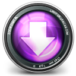
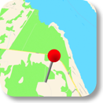
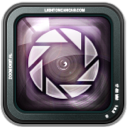
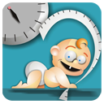
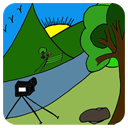

Mac Applications
 FirstPass Image Downloader and Browser
An intuitive image downloader and browser written by a photographer for photographers.
- Lightweight, stand-alone image browser
- Digital imaging workflow accelerator
- Allows automatic download from multiple devices
- Available on the Mac AppStore
iOS Applications
Location FixA simple way to track and share all your favourite locations:
- Easily place a pin on a map to store your favourite location
- Add rich meta data (name, address, photo, notes, subject etc.) to any location
- Share location and associated meta data with others
- Route to your locations using either Apple Maps or Google Maps applications
- Organize your locations by subject
- Save location information from other applications
- Available on the AppStore
New Camera AppA fresh look at your iPhone / iPad camera
Includes many advanced features and an intuitive, easy-to-use interface.
- Continuous (burst) shooting mode (low, medium or high speed)
- Self-timer camera mode (with variable delay and a blinking indicator)
- Movable shutter button
- Tap-and-drag to select focus point
- Tap-and-drag to change exposure
- An attractive vertical grid layout to view your photos
- An option to password-protect your photo album for added privacy
- An option to add photos to the standard device photo library
- Instantly share photos via Tweeter, Facebook, Dropbox or email
- Deprecated
Ottawa-Carleton School Bus Status Application
A reliable, simple and effort-free way of accessing daily information about the status of school buses in the Ottawa area.
- Sends automatic notifications for school bus delays and cancellations
- Works on all iOS devices (iPhone, iPad and iPod touch)
- Provides a searchable table of known delays
- Simple, efficient and easy-to-use application
- Deprecated
 Growth Charts
An easy way to track and plot a baby’s growth.
- Easily keep track of the growth of your baby (weight, length and head size) on your iPhone or iPod touch
- Plot growth charts maintained by recognized health agencies (weight for age, height for age, head for age and weight for height)
- Track growth of more than one child
- Deprecated
 Hyper Focal Distance Calculators
A simple photography application to calculate the hyper focal distance (i.e. a distance beyond which all objects can be brought into an "acceptable" focus).
- Easy to use and intuitive program interface
- Supports over 150 types of cameras
- Supports multiple measurement units
- Does not require internet connectivity
- Available on the AppStore
- MacWorld.com review, 4.5 out of 5 mice.